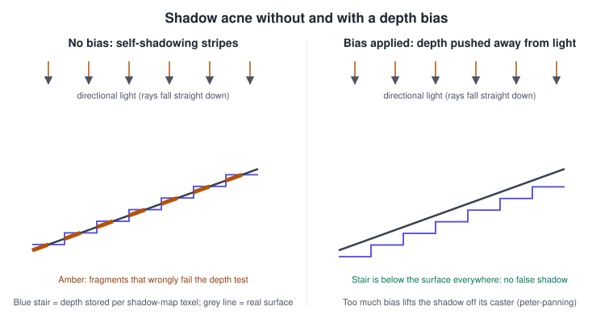
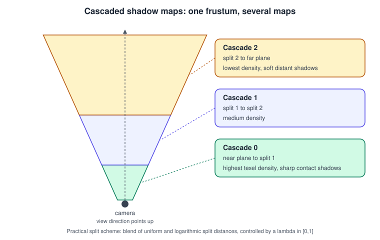

Shadows and Global Illumination
|
This content was generated with the assistance of AI and should be verified against the official documentation before being relied on in production. |
A lit surface tells the viewer how a point is shaded; a shadow tells them where objects are in relation to each other.
This page explains how a real-time renderer decides that a point is hidden from a light, how that decision is filtered and
stabilised, and how the light that bounces between surfaces (global illumination) is approximated or computed. It was
checked in November 2026. The techniques are API independent, and the examples use GLSL 4.50 (OpenGL and Vulkan), WGSL
(the W3C WebGPU Shading Language, a Candidate Recommendation Draft at the time of writing) and the GL_EXT_ray_query GLSL
extension (Vulkan ray queries). WebGPU is available in Chrome and Edge 113 and later, Firefox 141 and later on Windows,
and Safari 26. Hardware ray tracing needs a GPU and driver that support the Vulkan ray query extensions, DirectX
Raytracing, or the Metal ray tracing API; there is no ray tracing in WebGL or in WebGPU as published.
The running example is the Bookshelf scene: a desk lamp (modelled as a directional light for simplicity) falls on the shelf and its books, and a book casts a shadow on the board below it. How the shelf and its materials are lit before shadows are added is explained in Lighting and Shading Models; the model itself can be downloaded as bookshelf.glb.
Why shadows are not free in a rasteriser
A rasteriser shades one fragment at a time and knows nothing about the other triangles of the scene. A shadow is a question about those other triangles: is there anything between this point and the light? Ray tracing answers the question directly, by casting a ray. A rasteriser answers it indirectly, by first rendering the scene from the point of view of the light and remembering what the light sees. The main families are:
-
Shadow mapping: render the depth of the scene from the light and compare. It is the default technique in every engine because it fits the rasteriser, scales with screen size and works for any geometry.
-
Shadow volumes: extrude silhouette edges away from the light and count crossings in the stencil buffer. The result is pixel-exact, but the geometry cost is high, hard shadow edges cannot be softened cheaply, and it is rarely used today.
-
Projected and baked shadows: flatten a mesh onto a plane (a blob shadow under a character), or precompute shadows into textures (lightmaps).
-
Ray-traced shadows: cast a ray (or several) from each visible point to the light, using a bounding volume hierarchy.
The older books are explicit about this split. The OpenGL SuperBible has a chapter on shadows, written for the
fixed-function and early programmable era; Daniel Selman’s Java 3D Programming and the Java 3D API specification do
not offer shadows at all, because Java 3D’s retained scene graph had no shadow support and developers had to build shadow
textures themselves. Where those books describe glTexGen-style projective texturing, shadow volumes with the stencil
buffer or software shadows, the modern equivalent is a depth texture sampled with a comparison sampler, described next.
Shadow mapping step by step
Shadow mapping has two passes.
-
Shadow pass: render the scene from the light, with a camera whose view and projection matrices describe the light. Only depth is written, to a depth texture (the shadow map). A directional light uses an orthographic projection that encloses the visible part of the scene; a spot light uses a perspective projection; a point light needs a cube map or six renders.
-
Main pass: for each fragment, transform its world position by the light’s view-projection matrix to get light-space coordinates, convert them to texture coordinates and a depth, and compare that depth with the value stored in the map. If the fragment is farther from the light than the stored value, something is in front of it and it is in shadow.
The mathematics is a chain of the transforms that Coordinate Spaces and Transforms describes. With \(M\) the model matrix and \(V_L\), \(P_L\) the light’s view and projection matrices, the clip position of a point seen by the light is
\[ \mathbf{p}_{L} = P_L \, V_L \, M \, \mathbf{p} \]
After the perspective divide the x and y components lie in \([-1, 1]\) and must be remapped to texture coordinates
\([0, 1]\). The depth range depends on the API: OpenGL’s clip space has depth in \([-1, 1]\) (remapped to \([0, 1]\) for
the depth buffer unless glClipControl changes it), while Vulkan, Direct3D, Metal and WebGPU already use \([0, 1]\). The
texture v coordinate is flipped as well in APIs whose texture origin is the top-left corner. Mixing these conventions is
the commonest reason for a shadow that is mirrored or absent.
Building the light matrices
For a directional light the orthographic box must contain everything that can cast a shadow into the visible region. The Bookshelf uses a box around the shelf. The following C++ example uses the GLM library, which follows the GLSL conventions, and shows the clip-space adjustment for Vulkan and the other zero-to-one APIs.
#define GLM_FORCE_DEPTH_ZERO_TO_ONE // Vulkan, Metal, WebGPU, Direct3D conventions
#include <glm/glm.hpp>
#include <glm/gtc/matrix_transform.hpp>
glm::mat4 buildLightViewProj(const glm::vec3& lightDir, const glm::vec3& center, float radius)
{
// Place the light "eye" behind the scene, looking along lightDir.
const glm::vec3 eye = center - glm::normalize(lightDir) * radius;
const glm::vec3 up = std::abs(lightDir.y) > 0.99f ? glm::vec3(1, 0, 0) : glm::vec3(0, 1, 0);
const glm::mat4 view = glm::lookAt(eye, center, up);
// Orthographic box that encloses a sphere of the given radius around the shelf.
glm::mat4 proj = glm::ortho(-radius, radius, -radius, radius, 0.0f, 2.0f * radius);
proj[1][1] *= -1.0f; // Vulkan only: flip Y because clip space Y points down
return proj * view;
}Two practical points keep the shadow stable. First, snap the light-space origin to whole shadow-map texels as the camera moves; otherwise the shadow edge swims and shimmers. Second, fit the box tightly: every unit of unused box wastes texels and lowers the effective resolution.
Sampling the shadow map
Modern APIs provide a comparison sampler, which fetches the four neighbouring texels, compares each with a reference
depth, and bilinearly interpolates the four comparison results (not the depths). A single comparison-sampler lookup is
therefore already a small filtered shadow test, called hardware PCF. In GLSL it is a sampler2DShadow; in WGSL it is a
texture_depth_2d together with a sampler_comparison.
#version 450
layout(set = 0, binding = 1) uniform sampler2DShadow uShadowMap; // compare mode enabled on the sampler
layout(location = 0) in vec4 vLightClip; // light-space clip position from the vertex shader
layout(location = 1) in vec3 vNormal;
layout(location = 2) in vec3 vToLight; // normalised direction from the surface to the light
layout(location = 0) out vec4 oColor;
float shadowFactor(vec4 lightClip, float bias)
{
vec3 ndc = lightClip.xyz / lightClip.w;
vec2 uv = ndc.xy * 0.5 + 0.5; // Vulkan: no depth remap, depth is already in [0, 1]
float depth = ndc.z - bias;
if (uv.x < 0.0 || uv.x > 1.0 || uv.y < 0.0 || uv.y > 1.0 || depth > 1.0) return 1.0; // outside the map: lit
return texture(uShadowMap, vec3(uv, depth)); // 0.0 shadowed, 1.0 lit, in between at edges (hardware PCF)
}
void main()
{
vec3 n = normalize(vNormal);
float ndl = max(dot(n, vToLight), 0.0);
float bias = max(0.002 * (1.0 - ndl), 0.0005); // slope-scaled bias in light depth units
float lit = shadowFactor(vLightClip, bias);
oColor = vec4(vec3(ndl * lit), 1.0);
}The WebGPU version differs in three ways: the texture is a depth texture, the sampler is declared with
compare: "less" on the JavaScript side, and the lookup function is textureSampleCompare.
@group(0) @binding(1) var shadowMap: texture_depth_2d;
@group(0) @binding(2) var shadowSampler: sampler_comparison;
struct FragmentInput {
@location(0) lightClip: vec4f,
@location(1) normal: vec3f,
@location(2) toLight: vec3f,
};
fn shadowFactor(lightClip: vec4f, bias: f32) -> f32 {
let ndc = lightClip.xyz / lightClip.w;
// WebGPU texture space has its origin at the top-left corner, so flip y.
let uv = vec2f(ndc.x * 0.5 + 0.5, 0.5 - ndc.y * 0.5);
let inside = all(uv >= vec2f(0.0)) && all(uv <= vec2f(1.0)) && ndc.z <= 1.0;
// textureSampleCompare must run in uniform control flow, so sample first and select afterwards.
let s = textureSampleCompare(shadowMap, shadowSampler, uv, ndc.z - bias);
return select(1.0, s, inside);
}
@fragment
fn fs(in: FragmentInput) -> @location(0) vec4f {
let ndl = max(dot(normalize(in.normal), normalize(in.toLight)), 0.0);
let bias = max(0.002 * (1.0 - ndl), 0.0005);
return vec4f(vec3f(ndl * shadowFactor(in.lightClip, bias)), 1.0);
}Source: WGSL: textureSampleCompare
The JavaScript side creates the sampler and the depth texture. The depth texture needs the RENDER_ATTACHMENT usage so
the shadow pass can render into it, and TEXTURE_BINDING so the main pass can sample it.
const shadowMap = device.createTexture({
size: [2048, 2048],
format: "depth32float",
usage: GPUTextureUsage.RENDER_ATTACHMENT | GPUTextureUsage.TEXTURE_BINDING,
});
const shadowSampler = device.createSampler({
compare: "less", // makes it a comparison sampler
magFilter: "linear", // linear filtering of the four comparison results
minFilter: "linear",
});Source: WebGPU: GPUSamplerDescriptor
The shadow-map artefacts

Shadow acne
The shadow map stores one depth per texel, but the surface being tested is continuous. A texel covers an area; the depth stored for it is the depth at one sample point, and across the texel the real surface is slightly closer to or farther from the light than that value. On a surface that is tilted relative to the light the surface is below the stored depth for part of every texel, so the surface appears to shadow itself in stripes. This is shadow acne.
The fix is a depth bias: move the comparison away from the light by a small amount so that the surface passes its own test. There are three places to apply it, and they can be combined:
-
Constant bias in the comparison, as in the shader above: subtract a small value from the fragment’s light depth.
-
Slope-scaled bias: the needed offset grows with the angle between the surface and the light direction, so scale the bias by something like \(\tan\theta\) of that angle. The shader above approximates it with \(1 - N \cdot L\).
-
Rasteriser bias in the shadow pass: the API can offset the depth written to the shadow map. OpenGL has
glPolygonOffset, Direct3D hasDepthBiasandSlopeScaledDepthBias, Vulkan hasvkCmdSetDepthBias(or the pipeline’sdepthBiasConstantFactor,depthBiasSlopeFactoranddepthBiasClamp), and WebGPU hasdepthBias,depthBiasSlopeScaleanddepthBiasClampin the depth-stencil state of the shadow pipeline.
// OpenGL: render the shadow pass with polygon offset so that stored depths are pushed away from the light.
glEnable(GL_POLYGON_OFFSET_FILL);
glPolygonOffset(2.0f /*factor: slope scale*/, 4.0f /*units: constant, in depth-buffer resolution units*/);
drawScene();
glDisable(GL_POLYGON_OFFSET_FILL);const shadowPipeline = device.createRenderPipeline({
layout: "auto",
vertex: { module: shadowModule, entryPoint: "vs" },
depthStencil: {
format: "depth32float",
depthWriteEnabled: true,
depthCompare: "less",
depthBias: 2, // constant, scaled by the format's minimum resolvable depth
depthBiasSlopeScale: 2.0, // multiplied by the maximum depth slope of the triangle
depthBiasClamp: 0.0,
},
});Source: WebGPU: GPUDepthStencilState
A common alternative is to render only back faces into the shadow map: the front face of a closed object then never compares against its own depth, and the bias can be small. It fails for thin or open geometry such as a single-sided board; the Bookshelf’s shelf boards are boxes and work.
Peter-panning and light bleeding
Too much bias detaches the shadow from its caster, so the base of the book seems to float above the board. This is peter-panning. Combat it with smaller bias values, a higher-resolution or tighter shadow map, back-face rendering, or a normal offset: move the lookup position along the surface normal by an amount proportional to the texel size instead of changing the depth. Light bleeding appears at the contact point of two thin occluders, mainly with variance-based filtering techniques; it is the main reason most engines prefer PCF or its variants.
Resolution, aliasing and swimming
The shadow map has a fixed number of texels, spread over the area the light covers, so a shadow edge is stair-stepped when one shadow texel covers several screen pixels. Raising the resolution costs memory and fill rate (a 4096 by 4096 32-bit depth map is 64 MiB). Tight fitting, cascades and filtering are cheaper first steps.
Filtering: PCF and soft shadows
Percentage-closer filtering (PCF) takes several depth comparisons around the lookup position and averages the binary results. Averaging the comparison results, not the depths, is the important part: averaging depths first would give a depth that matches no surface. A small kernel (2 by 2 to 5 by 5) softens the edge by a fixed width. Using a comparison sampler gives you a 2 by 2 kernel for free, as above. A larger kernel can be done with a loop:
float pcf3x3(sampler2DShadow map, vec3 shadowCoord, vec2 texelSize)
{
float sum = 0.0;
for (int x = -1; x <= 1; ++x)
for (int y = -1; y <= 1; ++y)
sum += texture(map, vec3(shadowCoord.xy + vec2(x, y) * texelSize, shadowCoord.z));
return sum / 9.0;
}Source: OpenGL 4 reference: texture
Real shadows are sharp near the occluder and soft far from it, because a light has a size. Percentage-closer soft shadows estimate the occluder distance with a blocker search (average the depths of the texels that are closer than the receiver) and widen the PCF kernel in proportion to the penumbra width. The penumbra width is \(w = w_{light}\,(d_{receiver} - d_{blocker}) / d_{blocker}\). Poisson-disc or rotated sampling patterns, combined with a noise texture, hide the banding of a regular grid, at the price of noise that temporal anti-aliasing later cleans up. Other filters exist (variance, exponential and moment shadow maps) that blur the map before use and can be mip-mapped, but they trade light bleeding for speed and are less common in current engines.
Cascaded shadow maps

A single shadow map for a large outdoor scene wastes most of its texels on the distance. Cascaded shadow maps (CSM) divide the camera’s view frustum into depth ranges (typically 3 to 5), fit one orthographic light projection to each range, and render one map per cascade (a texture array or an atlas works well). The shader picks the first cascade that contains the fragment, based on its view-space depth. Nearby shadows get a dense map and distant ones a sparse one, so screen-space density stays roughly constant.
The split distances are usually a blend of a uniform and a logarithmic distribution,
\[ z_i = \lambda \, n \left(\frac{f}{n}\right)^{i/N} + (1 - \lambda) \left( n + \frac{i}{N}(f - n) \right) \]
for near plane \(n\), far plane \(f\), \(N\) cascades and a blend factor \(\lambda\) between 0 and 1.
#include <array>
#include <cmath>
// Returns the far distance of each cascade, view-space, for N cascades.
template <size_t N>
std::array<float, N> cascadeSplits(float nearZ, float farZ, float lambda)
{
std::array<float, N> splits{};
for (size_t i = 1; i <= N; ++i) {
const float p = static_cast<float>(i) / static_cast<float>(N);
const float logSplit = nearZ * std::pow(farZ / nearZ, p);
const float uniSplit = nearZ + (farZ - nearZ) * p;
splits[i - 1] = lambda * logSplit + (1.0f - lambda) * uniSplit;
}
return splits;
}Details that decide quality:
-
Stabilise each cascade: fit it to a bounding sphere of its frustum slice, not to the tight box of the slice, and snap to texel increments, so the map does not change size or shimmer when the camera rotates.
-
Blend between cascades over a short band, or the cut between two resolutions is visible.
-
Casters outside the slice still cast into it: pull the light’s near plane back (depth clamping or an unclipped near plane in the shadow pass) so that tall objects behind the slice are not clipped away.
-
Cost: each cascade is another draw of the casters. Culling per cascade and rendering the farthest cascades at lower update rates are the usual savings.
Ambient occlusion
Ambient light is not uniform: the crevice between two books receives less of it than the top of the shelf. Ambient occlusion (AO) estimates the fraction of the hemisphere above a point that is blocked nearby, and darkens the ambient and indirect terms by that fraction. It is not a replacement for shadows, because it ignores the direction of lights.
Screen-space ambient occlusion (SSAO) works from the depth buffer (and usually the normal buffer) of the finished frame. For each pixel it reconstructs the view-space position, places a handful of sample points in a hemisphere around the normal, projects them to the screen, and counts how many land behind the stored depth.
// Fragment shader of a full-screen SSAO pass (view-space, hemisphere samples in uKernel).
#version 450
layout(set = 0, binding = 0) uniform sampler2D uDepth;
layout(set = 0, binding = 1) uniform sampler2D uNormal; // view-space normal, xyz in [-1, 1]
layout(set = 0, binding = 2) uniform sampler2D uNoise; // 4x4 random rotation, tiled over the screen
layout(set = 0, binding = 3) uniform Params {
mat4 proj;
mat4 invProj;
vec4 kernel[16]; // xyz: sample offset inside the unit hemisphere, w unused
vec2 noiseScale; // screen size / 4
float radius;
float bias;
} u;
layout(location = 0) in vec2 vUv;
layout(location = 0) out float oOcclusion;
vec3 viewPos(vec2 uv)
{
float d = texture(uDepth, uv).r;
vec4 clip = vec4(uv * 2.0 - 1.0, d, 1.0);
vec4 v = u.invProj * clip;
return v.xyz / v.w;
}
void main()
{
vec3 p = viewPos(vUv);
vec3 n = normalize(texture(uNormal, vUv).xyz);
vec3 rnd = vec3(texture(uNoise, vUv * u.noiseScale).xy, 0.0);
vec3 t = normalize(rnd - n * dot(rnd, n));
mat3 tbn = mat3(t, cross(n, t), n);
float occlusion = 0.0;
for (int i = 0; i < 16; ++i) {
vec3 samplePos = p + tbn * u.kernel[i].xyz * u.radius;
vec4 clip = u.proj * vec4(samplePos, 1.0);
vec2 uv = clip.xy / clip.w * 0.5 + 0.5;
float sceneZ = viewPos(uv).z;
float rangeCheck = smoothstep(0.0, 1.0, u.radius / abs(p.z - sceneZ));
occlusion += (sceneZ >= samplePos.z + u.bias ? 1.0 : 0.0) * rangeCheck;
}
oOcclusion = 1.0 - occlusion / 16.0;
}Source: OpenGL 4 reference: texture
The raw result is noisy because of the random rotation, so a 4 by 4 blur pass follows. Variants such as horizon-based AO (HBAO) and ground-truth AO (GTAO) trade the random samples for a few slices through the depth buffer and give more accurate and more stable results. SSAO only sees what is on the screen, so occluders off-screen or hidden behind another object are missed and the occlusion at the screen edge fades. The appearance changes with the camera, and thin objects produce halos unless the range check is used.
Baked lighting: lightmaps and probes
A static shelf in a static room does not need its shadows and bounced light recomputed each frame. Lightmaps store precomputed lighting (direct light, shadows and indirect light) in a texture applied through a second UV set. They give soft, high-quality, global illumination at the price of one texture sample, but they are static: moving a book does not update the map. Light baking is done offline by the engine’s lightmapper (Unity’s Progressive Lightmapper, Unreal’s Lightmass or GPU Lightmass) or an external tool, and the result must have a unique, non-overlapping UV layout with padding between charts so that bilinear filtering does not leak between islands.
Dynamic objects pick up baked lighting from light probes: points sampled in the space that store incoming light as low-order spherical harmonics (L1 or L2) or ambient-cube coefficients, which are interpolated for a moving object. Reflection probes capture a cube map of the surroundings for glossy reflections and image-based lighting. Mixed lighting modes bake indirect light while keeping direct light and shadows dynamic (the "shadowmask" and "baked indirect" modes in engines).
Real-time global illumination
Global illumination (GI) is the light that arrives at a point after bouncing off other surfaces: the warm glow that a red book casts onto the board next to it. In rasterisation it is approximated, and the practical options are:
-
Baked: lightmaps and probes, above. Fast, static.
-
Screen-space (SSGI, SSR for reflections): reuse the colour and depth buffers. Cheap, only sees what is on screen.
-
Voxel cone tracing and light propagation volumes: a coarse voxel grid of the scene is lit and sampled with cones. Dynamic, memory-hungry and now rarely shipped.
-
Surfel and radiance-cache techniques, and signed-distance-field tracing: the approach behind Unreal Engine’s Lumen (software ray tracing against distance fields, with optional hardware ray tracing), producing fully dynamic GI.
-
Hardware ray-traced GI: a few rays per pixel, accumulated and denoised over frames.
Ray-traced shadows
With acceleration structures and ray tracing support (the pipeline stages and the bounding volume hierarchy are in
Advanced Pipeline Stages), a shadow is a single yes/no ray query. In
Vulkan the VK_KHR_ray_query extension allows ray queries from any shader stage, including a normal fragment or compute
shader, so a rasterised scene can use ray-traced shadows without a full ray-tracing pipeline. The shader below tests
occlusion toward the light.
#version 460
#extension GL_EXT_ray_query : require
layout(set = 0, binding = 0) uniform accelerationStructureEXT tlas;
// Returns true when something blocks the segment from origin to origin + dir * tMax.
bool occluded(vec3 origin, vec3 dir, float tMax)
{
rayQueryEXT rq;
rayQueryInitializeEXT(rq, tlas,
gl_RayFlagsTerminateOnFirstHitEXT | gl_RayFlagsOpaqueEXT,
0xFF, // instance mask
origin, 0.001, // tMin: avoids self intersection, the ray-tracing counterpart of a bias
dir, tMax);
while (rayQueryProceedEXT(rq)) { } // opaque geometry: traversal resolves itself
return rayQueryGetIntersectionTypeEXT(rq, true) != gl_RayQueryCommittedIntersectionNoneEXT;
}Source: Vulkan: VK_KHR_ray_query
Soft shadows come from jittering the direction inside the light’s solid angle and averaging over frames with a denoiser.
Ray tracing also removes the artefacts of the previous sections: there is no resolution, no acne and no peter-panning, only
the small tMin offset. The cost is the acceleration-structure build and update for moving geometry, and a heavy shading
and denoising budget. Practical engines therefore combine them: shadow maps for most lights, ray-traced shadows for a
few important ones, and ray-traced or radiance-cache GI where the platform allows.
Common mistakes
-
Using a perspective projection for a directional light, or an orthographic one for a point light.
-
Forgetting that OpenGL’s clip depth is \([-1, 1]\) while the other APIs use \([0, 1]\), so the depth is compared in the wrong range.
-
Averaging depth values to filter instead of averaging comparison results.
-
Rendering the shadow pass with the main camera’s culling, so casters outside the camera’s view are missing.
-
Sampling the map outside its bounds and treating the clamped edge texel as a shadow.
-
Applying a constant bias that is correct for one light angle, leaving acne on grazing angles.
-
Calling
textureSampleComparein non-uniform control flow in WGSL, which fails validation: sample first, branch afterwards. -
Leaving the shadow-map texture in a depth-attachment layout (Vulkan) or without the binding usage (WebGPU) when the main pass samples it.
Performance notes
-
The shadow pass is a depth-only pass, so use cheap or no fragment shaders (alpha-tested casters need a shader), and cull per light.
-
Shadow maps cost fill rate and memory; a 2048 by 2048 map of 32-bit depth is 16 MiB, and cascades multiply this.
-
Update static maps once and re-render only the dynamic casters.
-
On tile-based GPUs (see GPU Architecture Basics) the shadow map is written to memory in full, so keep its resolution realistic.
-
PCF kernel size multiplies the texture reads; a 5 by 5 kernel costs 25 reads (or 25 times the hardware 2 by 2 footprint).
-
SSAO is bandwidth-bound: run it at half resolution and upsample with a depth-aware filter.
What changed recently
-
Comparison samplers and depth textures are core in every current API, so the old extensions
GL_ARB_shadowandARB_depth_textureare history; WebGPU exposes them directly (texture_depth_2d,sampler_comparison). -
Hardware ray tracing and ray queries moved from vendor extensions to cross-vendor Khronos extensions (
VK_KHR_ray_tracing_pipeline,VK_KHR_ray_query) and to DirectX Raytracing 1.1 and later; Metal gained ray tracing in its API for Apple silicon. -
Engines now ship fully dynamic GI (Unreal Engine’s Lumen) and virtual shadow maps (Unreal Engine 5), which render a very large virtual shadow map in pages on demand, bringing the resolution problem to a one-pixel-per-texel target for the visible region. Unity 6 has Adaptive Probe Volumes for baked probe lighting.
Where the older books fall short
| Older material | Current practice |
|---|---|
The SuperBible’s projective and fixed-function shadow techniques |
Depth textures and comparison samplers with PCF or cascades; shadow volumes only for special cases |
Java 3D (Selman’s Java 3D Programming, the Java 3D API specification): no built-in shadows, fixed-function lighting |
Per-fragment lighting with shadow maps, as in any current API |
Per-vertex lighting with a handful of lights |
Per-fragment lighting with clustered or deferred light lists, so many shadowed lights are feasible |
"Ambient" as a constant term |
Ambient occlusion, probes, lightmaps and global illumination |
See it in
OpenGL: Shadow Mapping; WebGL: three.js Lights and Shadows; Metal: Shadows in Metal; Vulkan: Ray Tracing in Vulkan; Unity: Materials, Textures and Lighting; Unreal Engine: Lighting, Lumen and MegaLights.